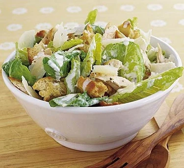

What is Chicken Caesar Salad?

Chicken Caesar Salad
Healthy, light, delicious; a perfect one-bowl dinner that will leave you feeling full and satisfied. Great for a
light, summer dinner that will please everyone in the family.
Ingredients
- 1 medium ciabbata loaf
- 3 tbsp olive oil
- 2 skinless, boneless chicken breasts
- 1 large cos or romaine lettuce, leaves separated
- 1 garlic clove
- 2 anchovies from a tin
- medium block parmesan cheese for grating and shaving
- 5 tbsp mayonnaise
- 1 tbsp white wine vinegar
Directions
- Heat oven to 200C/fan 180C/gas 6. Tear 1 medium ciabatta into big, ragged croutons or, if you prefer, cut
with a bread knife. Spread over a large baking sheet or tray and sprinkle over 2 tbsp olive oil.
- Rub the oil into the bread and season with a little salt if you like (sea salt crystals are best for this).
Bake for 8-10 mins, turning the croutons a few times during cooking so they brown evenly.
- Rub 2 skinless, boneless chicken breasts with 1 tbsp olive oil, season. Place pan over a medium heat for 1
min, until hot, but not smoking. Lay the chicken on the pan (it will sizzle if it’s hot enough) and leave
for 4 mins.
- Turn the chicken, then cook for 4 mins more. Check if it’s cooked by poking the tip of a sharp knife into
the thickest part; there should be no sign of pink and juices will run clear.
- Bash 1 garlic clove with the flat of a knife and peel off the skin. Crush with a garlic crusher. Mash 2
anchovies with a fork against the side of a small bowl.
- Grate a handful of parmesan cheese and mix with the garlic, anchovies, 5 tbsp mayonnaise and 1 tbsp white
wine vinegar. Season to taste. It should be the consistency of yogurt – if yours is thicker, stir in a few
tbps water to thin it.
- Shave the cheese with a peeler. Tear 1 large cos or romaine lettuce into large pieces and put in a large
bowl. Pull chicken into bite-size strips and scatter half over the leaves, along with half the croutons.
- Add most of the dressing and toss with your fingers. Scatter the rest of the chicken and croutons, then
drizzle with the remaining dressing. Sprinkle the parmesan on top and serve straight away.